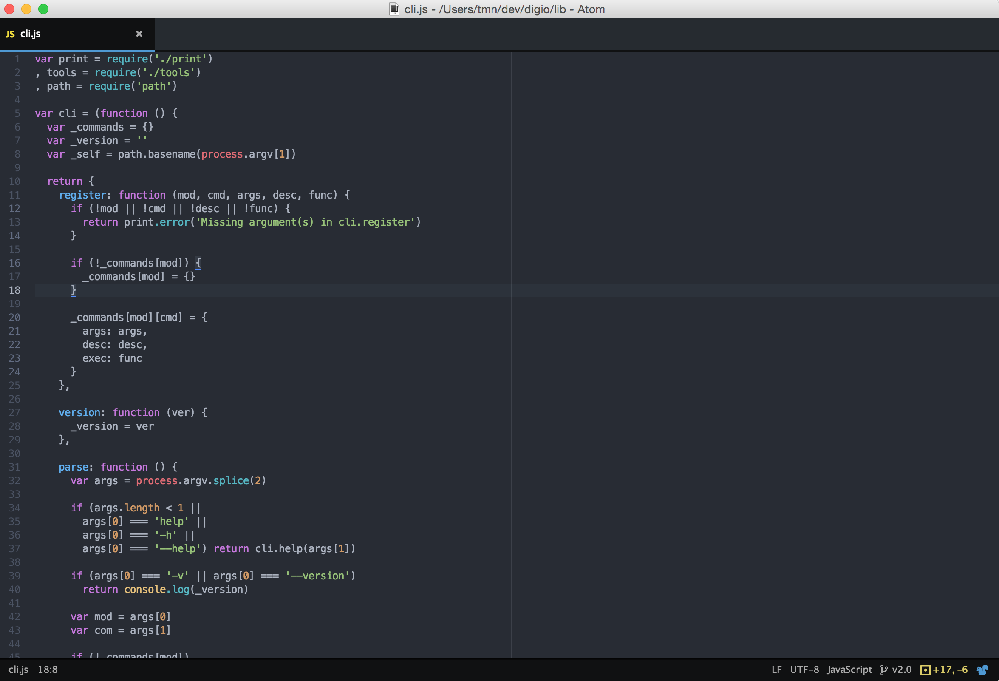
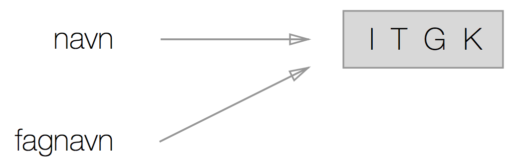
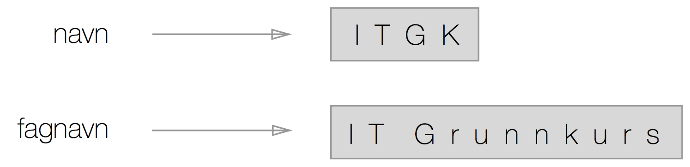

Tri Nguyen <tri.nguyen@bekk.no>
Tri Nguyen
tri.nguyen@bekk.no
Prosessen med å utforme et dataprogram
Et høynivå programmeringsspråk
if ITGK:print('Awesome!')
navn = 'ITGK'fagkode = 'TDT4110'
navn = 'ITGK'fagnavn = navn
navn = 'ITGK'fagnavn = 'IT Grunnkurs'
Strenger i Python er sekvenser med unicode-tegn. Vi benytter enten ' eller " for å definere en streng.
'Dette er en streng'"Dette er også en streng"
' og " kan ikke blandes, som feks: 'Dette er ikke en gyldig streng"
I Python har vi tre innebygde tall-typer
Heltall
120152015000
Desimaltall
1.252015.252015000.25
Alle objekter kan testes for sannhetsverdien til bruk som betingelse i if eller while.
Boolske verdier i Python definerer om noe er sann eller usann.
Falske verdier:
NoneFalse0, 0.0'', (), [], {}
Alle andre verdier regnes som sanne
Lister i python er sekvenser bestående av objekter.
tomListe = []minListe = [5, 7, 1, 6, 3, 4, 2]
minListe.append(8);
[5, 7, 1, 6, 3, 4, 2, 8]
minListe.sort();
[1, 2, 3, 4, 5, 6, 7, 8]